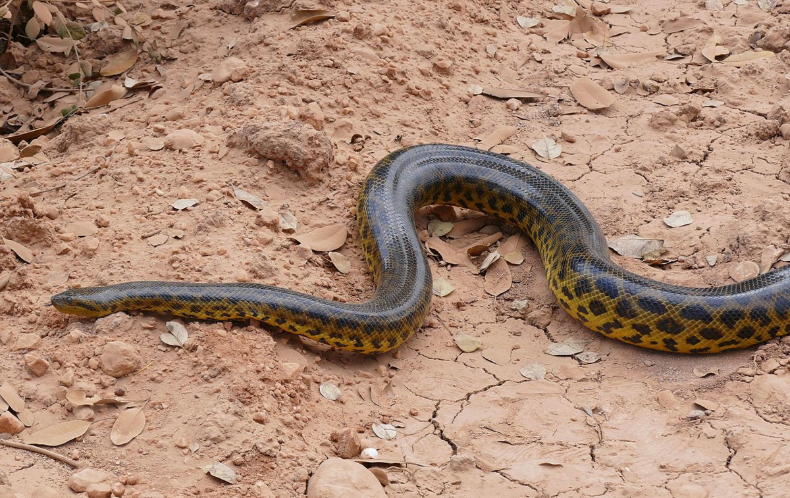

Ведет водный образ жизни. На сушу выползает только, чтобы погреться на солнце. Иногда заползает на деревья. Активность круглосуточная, но возрастает к вечеру. В засушливый период анаконда закапывается в ил, где впадает в частичное оцепенение до наступления сезона дождей. Довольно спокойная змея, при опасности старается быстро уползти в воду и может находиться под водой довольно долго. Однако эта анаконда может и весьма активно защищаться.
Анаконды живут по-одиночке, и нескольких парагвайских анаконд вместе можно увидеть только в брачный период.